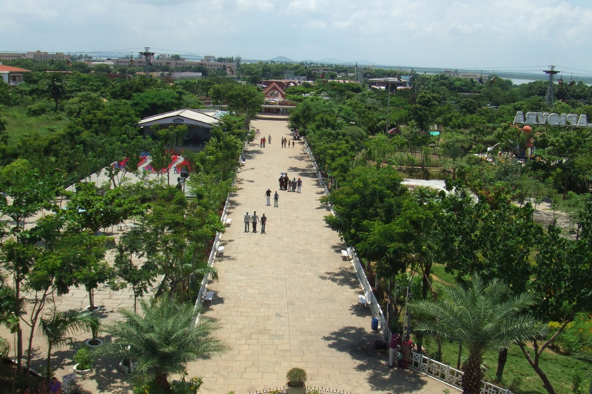
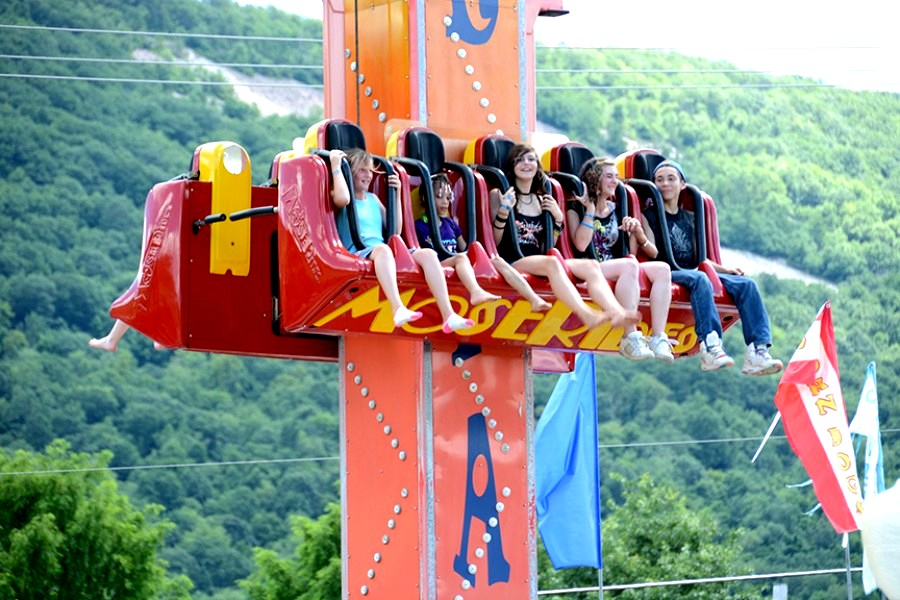
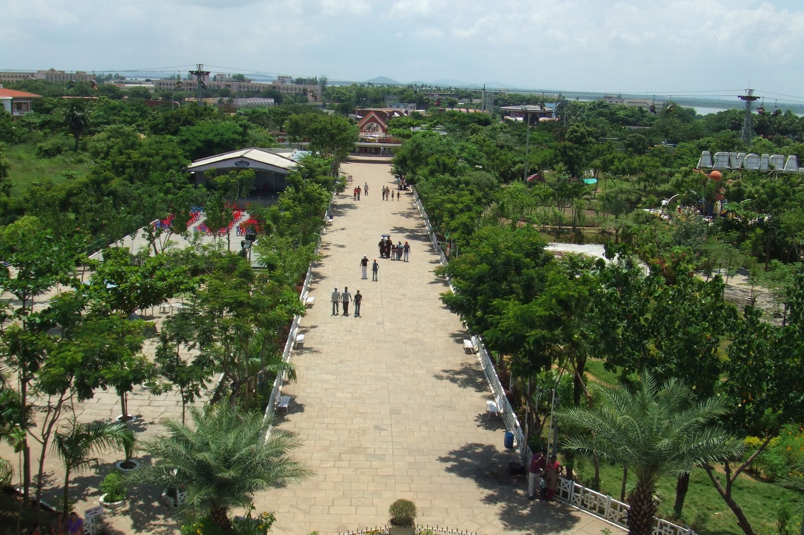
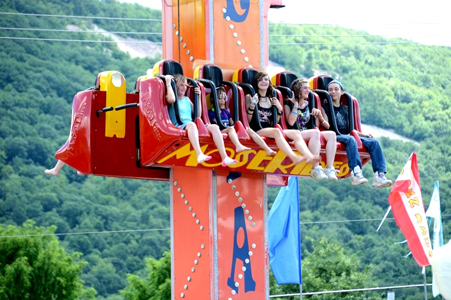
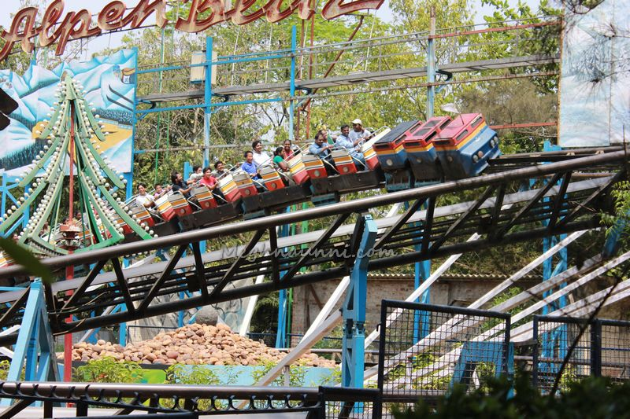
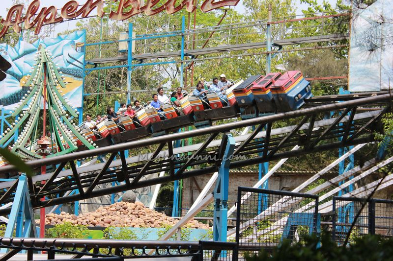
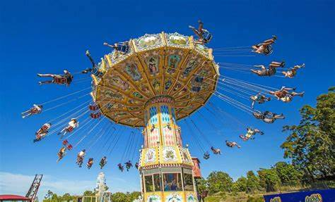
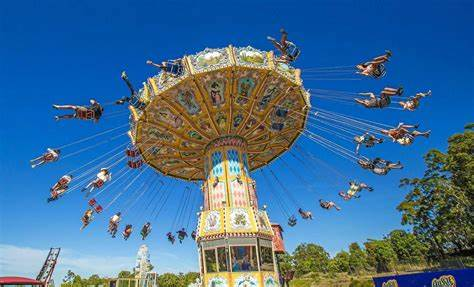

Queen's Land
I have visited Queensland twice from my childhood. The rides experience was good. One of my relatives worked here as a manager. I am sharing it here.Those discarded rides are being bough t for cheaper price and fixed here.The water rides are stinking with too much used water and chlorine smell. People who visit once, are not willing to go back. The ticket prices are unreasonably high for the quality of rides they offer.We've been there a few times, it is one of the best place for you to spend sometime together as a family and friends. Not all rides are suitable for everyone, you can choose the ones which you feel confident about.Overall, its an average theme part which you can visit once a blue-moon to take your time away from the normal stressful life.
Photos
 



 


 
